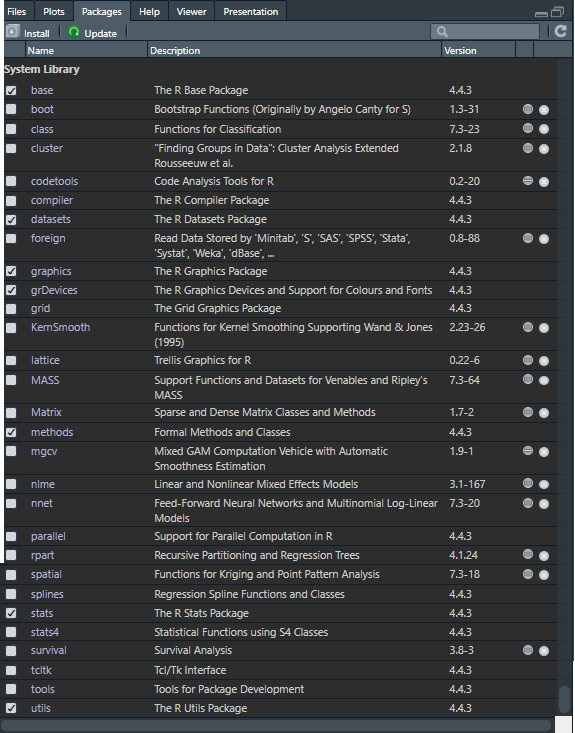
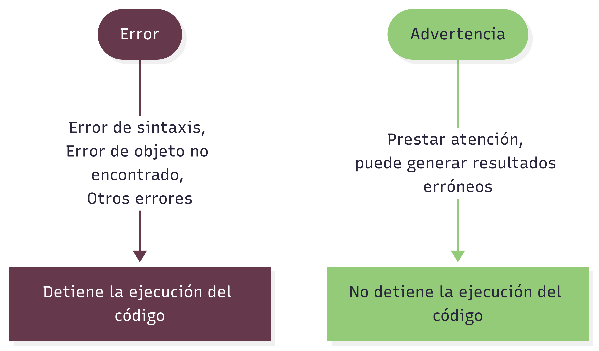
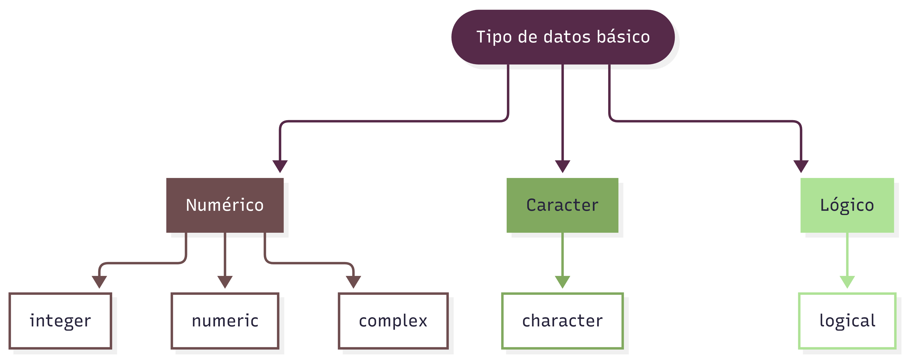
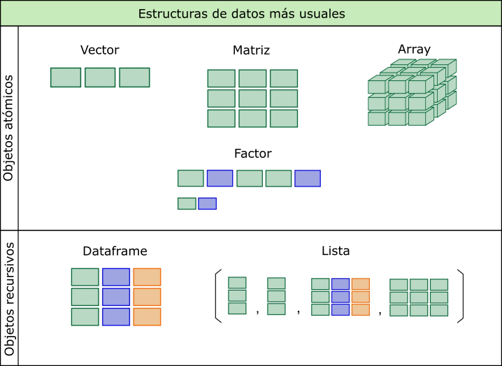

# esto es una línea de comentario y el intérprete no la ejecutaIntroducción a R
Christian Ballejo ![]()
Estos materiales, que forman parte del Módulo 1 del Curso de Epidemiología Avanzada, no pretenden cubrir exhaustivamente todos los temas relevantes de un curso de lenguaje R. Su objetivo es introducir únicamente aquellos aspectos más importantes y necesarios para su aplicación en los módulos siguientes.
¿Qué es R?
El sitio oficial r-project.org define a R como “un entorno de software libre para gráficos y computación estadística. Se compila y se ejecuta en una amplia variedad de plataformas UNIX, Windows y MacOS.”
Profundizando en su descripción, podemos decir que R es un lenguaje de programación interpretado, orientado a objetos, multiplataforma y de código abierto (open source) aplicado al manejo y análisis de datos estadísticos.
A continuación, detallamos cada una de sus características:
R es un lenguaje de programación estadístico
Si bien posee un entorno y se puede utilizar como calculadora avanzada o para simulaciones, R es fundamentalmente un lenguaje de programación. Presenta una estructura y reglas de sintaxis propias, así como gran variedad de funciones desarrolladas con fines estadísticos.
R es un lenguaje orientado a objetos
R implementa conceptos de la programación orientada a objetos, lo cual le permite ofrecer simpleza y flexibilidad en el manejo de datos. En R, todo con lo que trabajamos —variables, funciones, datos, resultados— son objetos que pueden ser modificados o combinados con otros objetos.
R es un lenguaje interpretado
R no requiere compilación previa. Los scripts se ejecutan directamente mediante el intérprete del lenguaje, que devuelve resultados de forma inmediata.
R es un lenguaje multiplataforma
R puede instalarse y utilizarse en sistemas operativos Linux, Windows y MacOS. En todos ellos funciona de la misma manera, lo que garantiza que los scripts pueden correr en cualquier plataforma sin necesidad de modificaciones.
R es software libre y de código abierto
R se distribuye gratuitamente bajo licencia GNU - GPL (General Public License), lo que otorga a los usuarios la libertad de usar, estudiar, compartir y modificar el software. Esto ha favorecido el crecimiento de una comunidad global activa y colaborativa.
Breve historia del lenguaje
R tiene su origen en el lenguaje S, desarrollado en los años 70 en los laboratorios Bell de AT&T (actualmente Lucent Technologies). Posteriormente, S dio lugar a una versión comercial llamada S-Plus, distribuida por Insightful Corporation.
En 1995, los profesores de estadística Ross Ihaka y Robert Gentleman, de la Universidad de Auckland (Nueva Zelanda) iniciaron el “Proyecto R”, con la intención de desarrollar un programa estadístico inspirado en el lenguaje S pero de dominio público.
Aunque R es considerado un dialecto de S, existen diferencias importantes en el diseño de ambos lenguajes.
El software está desarrollado principalmente en lenguaje C++, con algunas rutinas en Fortran. El nombre “R” hace referencia a las iniciales de sus creadores: Ross y Robert. Actualmente, R es mantenido por un grupo internacional de desarrolladores voluntarios conocido como el Core Development Team.
Scripts de R
Un script es un archivo de texto plano que contiene una secuencia de instrucciones para ser ejecutadas por el intérprete de R.
El término script puede traducirse como guión, archivo de órdenes, archivo de procesamiento por lotes o archivo de sintaxis.
Puede crearse con cualquier editor de texto o con entornos especializados, y permite ser leído, modificado, guardado y ejecutado de forma completa o línea por línea.
Una de sus principales ventajas es su reutilización: los scripts pueden adaptarse fácilmente a distintos análisis o contextos, lo que facilita la replicabilidad del trabajo.
Características generales del lenguaje
R posee una sintaxis textual precisa. Como en otros lenguajes de programación, la escritura debe ser exacta: distingue entre mayúsculas y minúsculas (case sensitive), y cada línea escrita en la consola comienza con el símbolo > (prompt1).
Documentación del código
La documentación es una tarea fundamental en cualquier lenguaje de programación, ya que nos permite entender el propósito del script, facilita su mantenimiento y posibilita su reutilización tanto por quien lo creó como por otras personas.
En R, la documentación de los scripts se realiza a través de comentarios, indicados con el símbolo #. Todo lo que sigue a ese símbolo es ignorado por el intérprete cuando se ejecute el código:
Así que a la hora de documentar es preferible abusar de estos comentarios que no utilizarlos.
Funciones
Las órdenes elementales en R se denominan comandos o funciones. Algunas se conocen como “integradas” ya que están incluidas en el núcleo del lenguaje (R base) y otras provienen de paquetes adicionales.
La mayoría de las ofrecidas en los paquetes o librerías están elaboradas con R, dado que todos los usuarios podemos crear nuevas funciones con el mismo lenguaje.
Toda función tiene un nombre y puede recibir argumentos (obligatorios u opcionales), que se colocan entre paréntesis y separados por comas. Incluso algunas funciones que no tienen asociado argumentos necesitan, en su sintaxis, a los paréntesis ().
Siempre una función devuelve un resultado, un valor o realiza una acción:
nombre_de_la_función(arg_1, arg_2, arg_n)Como el interprete de R no permite errores en la sintaxis de las expresiones, debemos atender a los siguientes puntos a la hora de escribirlas:
La sintaxis habitual de una función es la siguiente:
funcion(arg1, arg2, arg3,...)Los títulos de los argumentos pueden escribirse y mediante un igual agregar el valor correspondiente:
funcion(arg1 = 32, arg2 = 5, arg3 = 65,...)Se puede omitir el título del argumento y escribir directamente el valor, pero en este caso, hay que respetar el orden definido por la función:
funcion(32, 5, 65,...)Los valores numéricos, lógicos, especiales y objetos van escritos en forma directa y cuando escribimos caracteres (texto) van necesariamente encerrados entre comillas:
funcion(arg1 = 3, arg2 = NA, arg3 = TRUE, arg4 = "less", arg5 = x, ...)Paquetes o librerías
Los paquetes, también conocidos como librerías, son conjuntos de funciones, datos y documentación organizados organizadas en torno a una temática específica, que permiten ampliar las capacidades del sistema base de R.
Al instalar R, se incorpora un núcleo básico que queda activo automáticamente en cada sesión (base, datasets, graphics, grDevices, methods, stats y utils). Junto a este núcleo, se incluye un conjunto de paquetes recomendados que forman parte de la distribución oficial y pueden activarse manualmente cuando se los necesita. No obstante, la verdadera potencia de R reside en la posibilidad de incorporar nuevos paquetes desarrollados por la comunidad, lo que permite extender continuamente sus funcionalidades.

En la actualidad, existen más de 17.000 paquetes disponibles para una amplia variedad de aplicaciones, número que crece mes a mes gracias a la naturaleza open source del lenguaje. Cualquier persona puede desarrollar y compartir sus propios paquetes, aunque no todos llegan a publicarse en el repositorio oficial CRAN (Comprehensive R Archive Network), que actúa como principal fuente de distribución.
Los paquetes pueden descargarse directamente desde CRAN o instalarse a partir de archivos comprimidos locales (como .zip o .tar.gz). Una vez instalados, se los puede activar en cualquier análisis.
Dependencias
En muchos casos, al utilizar un paquete, este necesita de otros para funcionar correctamente. Esta relación se conoce como dependencia, y es una característica central en el ecosistema de R.
La mayoría de las funciones incluidas en los paquetes están desarrolladas en el propio lenguaje R y, durante su construcción, es habitual que recurran a funciones ya existentes en otros paquetes. Por ejemplo, una función nueva puede hacer uso de una función auxiliar que no pertenece al sistema base, sino a otro paquete externo.
Cuando intentamos ejecutar una función que depende de otras no disponibles en nuestra instalación, R no podrá encontrar esas funciones y nos devolverá un mensaje de error indicando que no reconoce el nombre solicitado. Este tipo de errores suele alertar sobre funciones “desconocidas” o “no encontradas”, lo que indica que falta instalar o activar alguno de los paquetes requeridos.
Para evitar estos inconvenientes, R intenta resolver automáticamente las dependencias cuando instalamos un paquete desde el repositorio oficial CRAN. Si el paquete necesita otros para funcionar, el sistema detecta esta relación y se encarga de instalar también aquellos paquetes auxiliares. De todos modos, si alguno no se instala correctamente o no se activa en la sesión, será necesario hacerlo de forma manual.
Errores y advertencias
El lenguaje R es muy preciso en su sintaxis. Cometer errores al escribir funciones u objetos es común durante el aprendizaje, y el intérprete de R devuelve mensajes de error cuando detecta algo incorrecto.
Uno de los aspectos clave a tener en cuenta es que R distingue entre mayúsculas y minúsculas (case sensitive), por lo que no es lo mismo escribir a que A.
Existen tres grupos de mensajes de error:
Errores de sintaxis
Error de objeto no encontrado
Otros errores
Errores de sintaxis
Ocurre cuando R no puede interpretar una línea de código porque algo está mal escrito. Los errores de sintaxis más frecuentes incluyen:
Paréntesis, comas, comillas, corchetes o llaves mal colocados o ausentes.
Argumentos mal separados o incorrectamente definidos.
Por ejemplo la función rep() repite valores una cantidad de veces. Tiene dos argumentos, x donde se coloca el valor a repetir y times donde se define la cantidad de veces:
rep(x = 3, times = 4) # repetimos 4 veces 3 con rep()[1] 3 3 3 3Si nos olvidamos de cerrar el paréntesis:
rep(x = 3, times = 4Error in parse(text = input): <text>:2:0: unexpected end of input
1: rep(x = 3, times = 4
^Si omitimos la coma entre argumentos:
rep(x = 3 times = 4)Error in parse(text = input): <text>:1:11: unexpected symbol
1: rep(x = 3 times
^Si usamos un nombre de argumento no válido:
rep(y = 3, times = 4)Error in rep(y = 3, times = 4): attempt to replicate an object of type 'symbol'Si escribimos mal el nombre de la función:
rop(x = 3, times = 4)Error in rop(x = 3, times = 4): could not find function "rop"Este último error se asemeja a un error de objeto no encontrado, aunque tiene origen en un problema de sintaxis.
Los mensajes de error en general y sobre todo al principio pueden parecer extraños y difíciles de entender, pero con un poco de práctica podemos inferir donde está el problema.
Error de objeto no encontrado
Este tipo de error se produce cuando R no reconoce un objeto utilizado en el código. Las causas más frecuentes incluyen:
El nombre del objeto está mal escrito (por ejemplo, errores de sintaxis o uso incorrecto de mayúsculas/minúsculas).
El objeto pertenece a un paquete o archivo que no fue cargado.
Faltan comillas al declarar caracteres.
Otras causas similares.
Volvamos al ejemplo anterior, ahora repitiendo un valor tipo character:
rep(x = "A", times = 4) # repetimos 4 veces "A" con rep()[1] "A" "A" "A" "A"Si olvidamos las comillas:
rep(x = A, times = 4) # repetimos 4 veces A con rep()Error: object 'A' not foundOtros errores
Son aquellos que se generan por causas distintas a errores de sintaxis o de objeto no encontrado. Por ejemplo:
"x" + 10Error in "x" + 10: non-numeric argument to binary operatorEl código anterior genera un mensaje de error porque intenta sumar objetos de tipos incompatibles entre sí.
Veamos otro ejemplo:
t.test(1)Error in t.test.default(1): not enough 'x' observationsEn este caso, el error se debe a que no hay suficientes observaciones para realizar una prueba \(t\) de Student.
Otro caso frecuente ocurre cuando se intenta acceder a una posición inexistente en un vector:
x <- c(1, 2, 3)
x[[5]]Error in x[[5]]: subscript out of boundsEste mensaje de error indica que el subíndice está fuera de los límites del objeto (subscript out of bounds).
Advertencias
Las advertencia no son tan serias como un error, o al menos no lo parece, ya que permiten el código se ejecute igual. Pero puede ocurrir que ignorar una advertencia llegue a ser algo muy serio, si esto implica que la salida de la función es equivocada.
Ignorar advertencias puede llevar a conclusiones erróneas, por lo que es recomendable prestarles atención y entender su causa.
Por ejemplo:
la función genera una advertencia porque el logaritmo de un número negativo no está definido en los reales, y R devuelve un valor NaN (Not a Number).
Resumiendo…

Creación de objetos
Todas las declaraciones donde se crean objetos usan el símbolo de asignación <-:
nombre_objeto <- valorVeámoslo en un ejemplo:
a <- 1En este caso asignamos el valor 1 al objeto a. El objeto a es un vector de una posición (un solo valor). Si llamamos al objeto, el intérprete devuelve el valor asignado previamente:
a[1] 1Observemos que, además de devolvernos el valor, aparece delante un número entre corchetes [1]. Este número es la ubicación o índice del comienzo del objeto. En este caso, como el vector tiene una sola posición, indica que el primer valor mostrado empieza en la posición 1.
Estructuras de datos
Los objetos contenedores de datos más simples pertenecen a cinco clases atómicas, que son:
integer(números enteros)numeric(números reales)complex(números complejos)character(cadenas de caracteres)logical(valores lógicos:TRUEoFALSE)

Sin embargo, cada una de estas clases de datos no se encuentran de manera aislada, sino encapsuladas dentro de la clase de objeto más básica de R, a la que se denomina vector.
En RStudio, el sistema de colores ayuda a distinguir los tipos de valores:
# Número
1111[1] 1111# Caracter
"esto es una cadena de texto"[1] "esto es una cadena de texto"# Lógico
TRUE[1] TRUE# Objeto
a <- 1Vectores
Un vector es un conjunto de valores (números o símbolos), del mismo tipo ordenados de la forma (elemento 1, elemento 2, … , elemento \(n\)), donde \(n\) es la longitud o tamaño del vector.
Los atributos principales son:
Tipo: puede ser
integer,numeric,character,complexological.Longitud: cantidad de elementos que contiene el objeto,
El vector más simple contiene un solo dato, por ejemplo un vector de longitud 1 y tipo numeric:
vec1 <- 1
vec1[1] 1Otro vector más grande por ejemplo podría ser (1, 5, 2). En este caso también es del tipo numeric pero tiene una longitud de 3 elementos:
vec2 <- c(1, 5, 2)
vec2[1] 1 5 2Para concatenar elementos usamos la función c(), dentro de la cual van los valores separados por comas. El orden de los elementos importa, en nuestro ejemplo la primera posición la ocupa el 1, la segunda el 5 y la tercera el 2. Si tuvieramos otro vector (5, 1, 2), no sería lo mismo porque los valores están ordenados de forma diferente.
Para conocer la longitud del vector usamos:
length(vec2)[1] 3Nos informa que vec2 tiene 3 elementos.
Para conocer el tipo de dato ejecutamos:
class(vec2)[1] "numeric"Podemos ver que los datos almacenados en este segundo ejemplo cumplen con la definición en lo que respecta al tipo de dato, ya que cada elemento es del mismo tipo (numeric).
Veamos un ejemplo de asignación de otro tipo de dato atómico, como es el character:
vec3 <- "Hola"
vec3[1] "Hola"Siempre que escribamos contenido de tipo character debemos hacerlo entre comillas. En este caso generamos el vector vec3 con el contenido "Hola", que, a pesar de ser una palabra compuesta de varios caracteres, dentro del vector vec3 esta ocupa una sola posición:
length(vec3)[1] 1Respecto al tipo de dato si usamos la función class() tendremos:
class(vec3)[1] "character"Factores
Un factor es un objeto especialmente diseñado para contener datos categóricos y se asocia particularmente con las variables cualitativas.
En su estructura interna está compuesto por dos vectores:
Un vector de índices enteros.
Un vector de categorías (niveles) de tipo
character, a los que hace referencia el primer vector.
Existen de dos tipos: factores nominales y factores ordinales. En el caso del segundo se establece un orden en los niveles.
Normalmente, obtenemos un tipo factor de convertir un vector u otro tipo de objeto con caracteres, pero para mostrar un ejemplo lo realizamos con la función factor():
[1] a b a c b a
Levels: a b cCreamos el objeto factor1 con 6 elementos caracteres y tres niveles sin orden.
Además de la practicidad de trabajar con factores, muchas funciones de R requieren que las variables categóricas estén en formato factor para funcionar correctamente.
Dataframe
Un dataframe es un objeto diseñado para contener conjuntos de datos y representa una estructura bidimensional similar a una tabla, con filas y columnas. Cada columna puede almacenar elementos de distintos tipos (por ejemplo, numéricos, de texto o lógicos), siempre que todos tengan la misma longitud.
Las columnas suelen tener nombres únicos, lo que permite referenciarlas fácilmente como si fueran variables individuales dentro del conjunto de datos.
Este es el tipo de objeto que se utiliza habitualmente para almacenar información importada desde archivos externos (por ejemplo, archivos de texto separados por comas o planillas de Excel), y con el que más frecuentemente trabajamos en los análisis.
Desde el punto de vista estructural, un dataframe está compuesto por una serie de vectores de igual longitud dispuestos verticalmente, uno al lado del otro, conformando las columnas de la tabla.
Veamos un ejemplo:
# Historia clínica
HC <- c("F324", "G21", "G34", "F231")
# Edad
edad <- c(34, 32, 34, 54)
# Sexo
sexo <- c("M", "V", "V", "M")
# dataframe
df1 <- data.frame(HC, edad, sexo)
df1 HC edad sexo
1 F324 34 M
2 G21 32 V
3 G34 34 V
4 F231 54 MCreamos tres vectores con datos de supuestos individuos, su historia clinica, la edad y el sexo. Luego mediante la función data.frame() “unimos” esos vectores en forma vertical para formar un dataframe de 3 variables y 4 observaciones.
Existen otras estructuras de datos que aparecen en la siguiente figura. Las más habituales en nuestro trabajo son los vectores y los dataframes. Los factores serán necesarios cuando tengamos que especificar distintos órdenes de niveles.

Operadores
Además de funciones, el lenguaje R cuenta con operadores de uso relativamente intuitivo, que permiten realizar operaciones de diferentes tipos con los objetos que contienen datos.
Operadores aritméticos
| Operador | Descripción |
|---|---|
| + | Suma |
| - | Resta |
| * | Multiplicación |
| / | División |
| ^ | Potencia |
| %% | Módulo |
| %/% | División de enteros |
Los operadores aritméticos se utilizan como si el lenguaje fuese una calculadora:
# Suma
2 + 5[1] 7# Resta
3 - 2[1] 1# Multiplicación
9 * 3[1] 27# División
10 / 2[1] 5# Potencia
5 ^ 2[1] 25También se pueden hacer operaciones con los objetos que almacenan valores numéricos:
a <- 3
b <- 6
(a + b) * b[1] 54Y funciona con objetos con más de un elemento, aplicando aritmética vectorial, donde las operaciones se realizan elemento a elemento:
a <- c(1, 2, 3)
a * 3[1] 3 6 9O bien, con operaciones entre los objetos, donde se realiza entre los elementos de la misma posición:
a <- c(1, 2, 3)
a * a[1] 1 4 9Operadores relacionales
| Operador | Descripción |
|---|---|
| < | Menor que |
| > | Mayor que |
| <= | Menor o igual que |
| >= | Mayor o igual que |
| == | Igual que |
| != | No igual que |
Habitualmente estos operadores se utilizan asiduamente en expresiones para indicar relaciones entre valores.
Podemos ver su funcionamiento en el ejemplo siguiente:
El lenguaje evalúa las comparaciones que hace el operador relacional igual (en este caso) y en aquellos valores que coinciden devuelve TRUE y en los que no hay coincidencia devuelve FALSE.
Lo mismo sucede con los otros operadores relacionales:
Operadores lógicos
| Operador | Descripción |
|---|---|
| ! | NOT |
| & | AND booleano |
| && | AND booleano para vectores de longitud 1 |
| | | OR booleano |
| || | OR booleano para vectores de longitud 1 |
Cuando queremos conectar algunas de las expresiones relacionales hacemos uso de estos operadores lógicos típicos (AND, OR, NOT).
Para ejemplificar podemos hacer:
a <- c(1:8)
a[1] 1 2 3 4 5 6 7 8(a > 3) & (a < 7)[1] FALSE FALSE FALSE TRUE TRUE TRUE FALSE FALSEEn el caso anterior usamos el operador & como conector AND de dos expresiones relacionales donde el lenguaje devuelve TRUE en el rango mayor a 3 y menor a 7 (valores 4,5 y 6).
Valores especiales
Existen algunos valores especiales para datos con expresiones reservadas en R, entre ellos encontramos los valores NA, NaN, Inf y NULL.
| Operador | Significado | Descripción |
|---|---|---|
| NA | Not available | Es la forma de expresar a los valores perdidos o faltantes (missing values) |
| NaN | Not a number | Utilizado para resultados de operaciones que devuelven error numérico |
| Inf | Infinity | Valor infinito (positivo) |
| -Inf | Infinity | Valor infinito (negativo) |
| NULL | Null | Valor nulo |
El más relevante de estos valores especiales es el NA que sirve para indicar que no hay valor en esa posición o elemento de un objeto.
Secuencias regulares
Además de concatenar elementos con la función c(), existen tres formas comunes de generar secuencias regulares.
La primera es mediante un operador secuencial (:), que genera una secuencia de enteros entre dos valores, ya sea en forma ascendente o descendente:
1:10 [1] 1 2 3 4 5 6 7 8 9 1010:1 [1] 10 9 8 7 6 5 4 3 2 1La segunda forma es mediante la función seq(), cuyos argumentos principales son from, to y by. Esta función permite mayor flexibilidad:
seq(from = 1, to = 20, by = 2) [1] 1 3 5 7 9 11 13 15 17 19El ejemplo anterior genera una secuencia de números que comienza en 1 y llega hasta 20, avanzando de dos en dos.
Algunos otros ejemplos de la misma función:
seq(from = 0.1, to = 0.9, by = 0.1)[1] 0.1 0.2 0.3 0.4 0.5 0.6 0.7 0.8 0.9seq(from = -5, to = 5, by = 1) [1] -5 -4 -3 -2 -1 0 1 2 3 4 5seq(from = 300, to = 0, by = -50)[1] 300 250 200 150 100 50 0La tercera opción es la función rep(), que permite duplicar valores. Su forma más básica es rep(x, times = n), donde se repite el valor x la cantidad de veces indicada por n.
Algunos ejemplos:
Índices
R implementa una forma eficiente y flexible de acceder selectivamente a elementos de un objeto basado en una indexación interna.
Para acceder a un índice se utiliza la notación de corchetes. Por ejemplo, si tenemos un vector x con varios elementos y queremos acceder al segundo, usamos x[2].
Esta forma de indexar los elementos de los distintos objetos nos permite realizar muchas operaciones desde el simple llamado, hasta seleccionar, eliminar o modificar valores.
Veamos algunos ejemplos:
# generamos un vector x con 5 letras
x <- c("a","b","c","d","e")
# llamamos a la primer posición y nos devuelve su valor
x[1][1] "a"# llamamos a la tercer posición y nos devuelve su valor
x[3] [1] "c"# llamamos a las posiciones 1 y 3 juntas mediante c()
x[c(1,3)] [1] "a" "c"# llamamos a las posiciones menos la 1 y la 4
x[-c(1, 4)] [1] "b" "c" "e"# creamos otro vector y con los valores 1,2 y 5
y <- c(1, 2, 5)
# utilizamos el vector y como índice
x[y] [1] "a" "b" "e"# asignamos el valor “h” a la posición 2 del vector x
x[2] <- "h"
x[1] "a" "h" "c" "d" "e"# creamos el vector z eliminando la posición 5 de x
z <- x[-5]
z[1] "a" "h" "c" "d"Estos ejemplos muestran las múltiples posibilidades que ofrece el uso de índices para manipular objetos en R, lo que hace al lenguaje muy poderoso y versátil.
Cuando se aplican índices a estructuras bidimensionales, como matrices o dataframes, la notación general es:
nombre[índice de fila, índice de columna]Gestión de factores
Al presentar las distintas estructuras de datos mencionamos que los factores suelen generarse a partir de vectores u otros objetos de tipo carácter.
Para entender cómo funcionan, partamos de un vector con datos categóricos:
respuesta <- c("Si", "No", "No", "Si", "Si", "Si", "No")Creamos un vector llamado respuesta con 7 elementos de tipo carácter, en el que se repiten las categorías "Si" y "No".
Podemos confirmar que se trata de un vector y que su contenido es de tipo carácter:
# preguntamos si sexo es un vector
is.vector(respuesta) [1] TRUE# visualizamos el tipo de dato de sexo
class(respuesta) [1] "character"Para crear un factor a partir de este vector debemos utilizar la función factor():
respuesta <- factor(respuesta)
respuesta[1] Si No No Si Si Si No
Levels: No SiEn la salida observamos los siete elementos y, debajo, una línea con los niveles del factor, indicados por Levels. Estos niveles son identificados automáticamente.
Podemos verificar cómo cambió el tipo de objeto:
# preguntamos si respuesta es un vector
is.vector(respuesta) [1] FALSE# preguntamos si respuesta es un factor
is.factor(respuesta) [1] TRUE# visualizamos el tipo de dato de respuesta
class(respuesta) [1] "factor"Aunque visualmente vemos palabras, internamente R trata al factor como un tipo especial basado en números. ¿Por qué sucede esto? Veámoslo con más detalle:
str(respuesta) Factor w/ 2 levels "No","Si": 2 1 1 2 2 2 1La función str() devuelve la estructura interna del objeto. En este caso, muestra que respuesta tiene dos niveles y que cada elemento del vector es representado por un número (1 o 2), donde 1 corresponde a "No" y 2 a "Si".
Esto significa que la estructura de los factores está compuesta por dos vectores: uno numérico que funciona como índice de enteros, que sustituye al vector de caracteres original, y el otro es un vector de caracteres, que contiene los niveles o categorías, a los que hace referencia el primer vector.
Para ver solo los niveles o categorías del factor podemos usar:
levels(respuesta)[1] "No" "Si"En los factores nominales donde no importa el orden, la función factor() implementa el orden alfabético para determinar a qué índice numérico pertenece cada categoría. Es claro en el ejemplo que a No le asigna el 1 y a Si el 2.
Pero si nos encontramos frente a una variable cualitativa ordinal vamos a necesitar indicarle a la función cual es el orden de las categorías.
Vamos al siguiente ejemplo:
salud <- c(4, 3, 1, 3, 2, 2, 3, 3, 1)
salud[1] 4 3 1 3 2 2 3 3 1Tenemos en el vector salud algunos códigos numéricos que representan nivel de salud de personas registradas por una encuesta donde 1 significa mala salud, 2 regular, 3 buena y 4 muy buena.
Procedemos a crear el factor nivsalud a partir de este vector:
nivsalud <- factor(salud,
label = c("Mala", "Regular", "Buena", "Muy buena"),
levels = 1:4)
nivsalud[1] Muy buena Buena Mala Buena Regular Regular Buena
[8] Buena Mala
Levels: Mala Regular Buena Muy buenaAquí utilizamos dos argumentos adicionales:
labels: define las etiquetas que queremos mostrar para cada categoría.levels: indica el orden de los niveles originales (en este caso, 1 a 4).
Aquí es necesario definir estos argumentos porque, a diferencia del factor respuesta, el vector salud contiene números en lugar de las palabras correspondientes a las categorías.
Hasta aquí hemos creado un factor pero si miramos sus niveles no encontraremos señales que sigan un orden específico:
levels(nivsalud)[1] "Mala" "Regular" "Buena" "Muy buena"Sin embargo, aún no hemos definido un orden explícito entre las categorías. Para hacerlo, agregamos el argumento ordered = TRUE:
nivsalud <- factor(salud,
label = c("Mala", "Regular", "Buena", "Muy buena"),
levels = 1:4,
ordered = TRUE)
nivsalud[1] Muy buena Buena Mala Buena Regular Regular Buena
[8] Buena Mala
Levels: Mala < Regular < Buena < Muy buenaAl incorporar este argumento, estamos diciendo que los niveles tienen orden natural. Esto puede observarse en la salida donde se muestra que "Mala" < "Regular" < "Buena" < "Muy buena".
Gestión de dataframes
En R, la estructura utilizada para almacenar datos provenientes de fuentes externas (como archivos .csv, planillas de cálculo, bases SQL, etc.) es el dataframe.
A modo de ejemplo, vamos a construir un dataframe llamado datos con 4 variables y 5 observaciones. Las variables serán:
id: identificador numérico entero y correlativo.edad: edad en años.sexo: codificado como"V"para varón y"M"para mujer.trabaja: variable lógica, dondeTRUE(T) representa que la persona trabaja yFALSE(F) que no lo hace.
# construimos el vector id
id <- 1:5
# construimos el vector edad
edad <- c(23, 43, 12, 65, 37)
# construimos el vector sexo
sexo <- c("V", "M", "M", "V", "M")
# construimos el vector trabaja
trabaja <- c(T, T, F, F, T)
# construimos el dataframe datos
datos <- data.frame(id, edad, sexo, trabaja)Aunque para el ejemplo construimos un dataframe manualmente, lo habitual en la práctica es leer archivos externos que se importan directamente como dataframes.
Algunas de las funciones generales que podemos aplicar son:
# pedimos el número de columnas (variables)
ncol(datos)[1] 4# pedimos el número de filas (registros u observaciones)
nrow(datos)[1] 5# pedimos las dimensiones del dataframe (observaciones,variables)
dim(datos)[1] 5 4También podemos visualizar como se compone el objeto datos aplicando str() que devuelve la estructura interna de cualquier objeto en R.
str(datos)'data.frame': 5 obs. of 4 variables:
$ id : int 1 2 3 4 5
$ edad : num 23 43 12 65 37
$ sexo : chr "V" "M" "M" "V" ...
$ trabaja: logi TRUE TRUE FALSE FALSE TRUEEsta salida nos informa que:
datoses un dataframe con 5 observaciones y 4 variables.ides un entero (int).edades numérica (num).sexoes de tipo carácter (chr).trabajaes lógica (logi).
Además, str() muestra los primeros valores de cada variable, que en este caso son todos, ya que el dataframe tiene solo 5 registros.
Cuando necesitemos llamar al contenido de alguna columna o variable del dataframe, utilizamos la siguiente notación:
nombre_del_dataframe$nombre_de_la_variablePor ejemplo, si queremos mostrar el contenido de la variable sexo del objeto datos hacemos:
datos$sexo[1] "V" "M" "M" "V" "M"Esto devuelve todos los valores de la variable sexo.
También podemos acceder a los elementos del dataframe usando indexación por filas y columnas:
# pedimos la tercer variable (sexo)
datos[,3][1] "V" "M" "M" "V" "M"Observemos que las dos salidas son idénticas, dado que muestran todas las observaciones de la variable sexo, aunque la solicitud sea de manera diferente.
Algunos otros ejemplos de uso de índices:
# observación 1 de la variable 2
datos[1,2][1] 23# observación 4 de todas las variables
datos[4,] id edad sexo trabaja
4 4 65 V FALSE# observación 1,2 y 3 de la variable 3
datos[1:3,3] [1] "V" "M" "M"# observación 5 de las variables 1 y 4
datos[5, c(1,4)] id trabaja
5 5 TRUEPor último, vamos podemos mostrar y gestionar los nombres de las variables con la función names():
names(datos)[1] "id" "edad" "sexo" "trabaja"Fórmulas
En R, las fórmulas se utilizan principalmente para describir modelos estadísticos, y las vamos a emplear a lo largo de toda la cursada.
Las fórmulas se escriben utilizando operadores como ~, +, *, entre otros. Se usan para especificar modelos como regresiones, ANOVA, pruebas de hipótesis y, en algunos casos, también para generar ciertos tipos de gráficos.
Formula genérica
Aquí la formula está dada por el operador ~, a la izquierda está la variable de respuesta o dependiente, a la derecha la o las variables explicativas o independientes. El esquema general es el siguiente:
variable_dependiente ~ variable independienteEl símbolo ~ (llamado virgulilla) puede interpretarse como “es modelada por” o “en función de”.
Por ejemplo, en una regresión lineal se utiliza la función base lm() y el argumento principal de esta función es una formula:
regresion_lineal <- lm(variable_respuesta ~ variable_explicativa,
data = datos)Además de la fórmula, la función lm() incluye el argumento data =, que es fundamental: allí se le indica a R el dataframe en el que debe buscar las variables involucradas en el modelo.
La siguiente tabla muestra los usos de los los operadores más comunes dentro de una formula:
| Operador | Ejemplo | Descripción |
|---|---|---|
| + | +x | Incluye la variable x |
| - | -x | Excluye la variable x |
| : | x : z | Incluye la interacción de la variable x con z |
| * | x * z | Incluye ambas variables y la interacción entre ellas |
Notas
Símbolo que aparece en la pantalla de la computadora indicando que el sistema está esperando información del usuario o que el sistema está listo para recibir instrucciones del usuario.↩︎